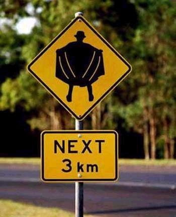

[꼭 이런 성적인 것만 변태는 아니다]
변태와 매니아(mania)의 차이는 뭘까?
아니 그보다 둘 사이의 공통점은 뭘까?
1. 변태와 매니아의 공통점
변태와 매니아. 둘은 모두 '비주류' 문화를 즐긴다는 공통점을 갖고 있다.
'비주류' 라고 표현한 것을 명심하자. 절대로 '비정상' 이나 '비도덕' 등이 아니다.
여기서 '비주류' 문화에 대해 잠시 짚고 넘어가겠다.
악식(惡食)을 예로 들어보자.
악식이 뭔지 잘 모르는 분들도 많을 것이다. 말 그대로 '비주류' 문화이기 때문이다.
악식이란 '비주류' 음식(?)들을 먹는 문화를 말한다. 예를 들면 산 도마뱀이나 동물의 피, 곤충/벌레등을 먹는 것이 있다.
어쩌다가 '악식(惡食)' 이라는 용어로 불리게 되었는지는 모르지만 용어의 뜻 그대로 '나쁜 것을 먹는다' 라는 의미는 아니다.
실제로는 분명 '나쁜 것' 이라기 보다는 '흔히 먹지 않는 것' 을 먹는다는 의미로 쓰이고 있다.
악식은 분명 상대적인 표현이다.
보신탕이 프랑스인의 입장에서는 악식일 수도 있고 유명한 원숭이 뇌도 우리나라에선 악식으로 보일 수 있다.
국가나 민족간의 문제만이 아니다.
필자는 초등학교때 메뚜기를 튀겨먹은적이 있으며 반찬으로 메뚜기 튀김을 싸온 친구도 본 적이 있다.
분명 악식은 지극히 주관적이고 개인적인 문화의 차이이다.
2. 변태와 매니아의 차이점
본론으로 돌아가서 변태와 매니아의 차이점은 무엇일까?
내가 메뚜기를 튀겨먹었으니 악식 변태인가? 악식 매니아인가?
그 차이는 '주류' 문화를 여전히 선호하는가에 달려 있다.
즉, 매니아는 '비주류' 문화를 섭렵했지만 여전히 '주류' 문화를 벗어나지 않고 있는 부류라면.
변태는 '비주류' 문화에 심취해서 '주류' 문화권을 이탈한 경우라고 보는 것이다.
위 사진에 나와 있는 '바바리맨' 의 경우를 보자.
노출에 대한 성적 욕구는 여러 사람들에게 공통적으로 존재한다.
노출에 대한 욕구를 성생활의 자극제로써 사용한다면 이것은 매니아다.
하지만 노출이 아니고서는 성적인 만족감을 얻을 수 없다면 이것은 변태다.
바바리맨이 되야만 하는 것이다.
3. 마치며
변태와 매니아는 선택에 의한 구분이 아니다.
우리는 변태로, 매니아로 선택되지도 선택하지도 않는다.
우리는 평가받을 뿐이다.
따라서 변태든 매니아든 그 평가가 사람의 옳고 그름이나 바르고 나쁨과 같은 절대 기준이 아닌
주류와 비주류의 상대적인 차이라는 점을 명심하자.
아무리 평범한 당신이라도 다른 문화권에서 극단적인 비주류일 수 있다.
- 이 글은 지극히 개인적인 견해를 밝힌 것 입니다. 단정적인 표현의 글이라도 필자는 이 내용이 보편적인 사실임을 보장하지 않습니다 -